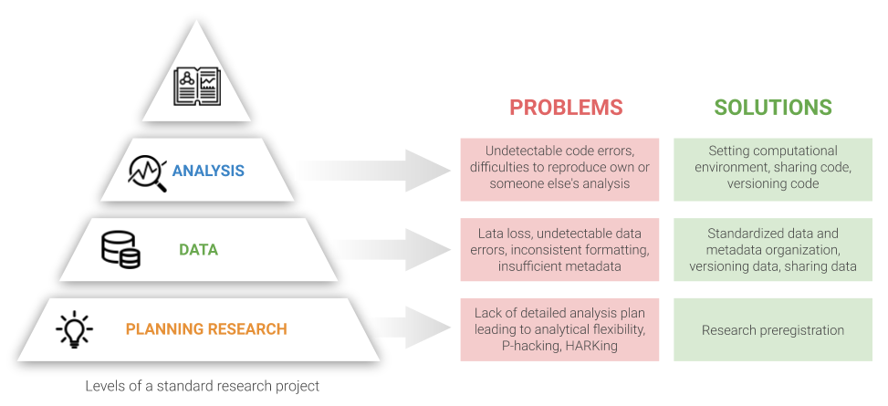

Introduction¶
The progress of science is based on valuable research. While reading the research paper you naturally trust the researchers that the presented results are true and that you can build your research upon them. Recent reports show, however, that scientists are not able to reproduce a large amount of published research. In this section we introduce you to the concept of reproducibility in research, reasons of reproducibility crisis, and motivations to lead reproducible research. Finally, we present you three steps that might improve reproducibility in your research.
Reproducibility in science¶
The goal of scientific research is to build reliable knowledge. To approach this, scientists should be able to repeat the analysis and replicate findings of other researchers. The individual research should be transparent and well documented so it can be verified by other scientists.
Reproducibility stands for “obtaining consistent results using the same input data, computational steps, methods, and code, and conditions of analysis”. It is also important to distinguish the reproducibility from replicability that stands for “obtaining consistent results across studies aimed at answering the same scientific question, each of which has obtained its own data” [NAS, 2018]. In contrast, the term robustness of research means that you can obtain consistent results using the same data but different analyses Finally, generalizability of research means that you can obtain consistent results using different data and analysis.

This image was created by Scriberia for The Turing Way community and is used under a CC-BY licence. The image was obtained from https://zenodo.org/record/3332808.
Reproducibility crisis¶
Intuitively, the published research results should be reliable and trustworthy. Recent alarming reports showed that it is difficult to reproduce or replicate results in various medical, life and behavioural sciences (Open Science Collaboration, OSC 2015). According to Stanford Encyclopedia of Philosophy, evidence suggesting that we face reproducibility crisis include:
absence of replication studies in the published literature in many scientific fields (e.g., Makel, Plucker, & Hegarty 2012),
failure to reproduce results of published studies in large systematic replication projects (e.g., OSC 2015; Begley & Ellis 2012),
evidence of publication bias (Fanelli 2010a),
a high prevalence of “questionable research practices”, which inflate the rate of false positives in the literature (Simmons, Nelson, & Simonsohn 2011; John, Loewenstein, & Prelec 2012; Agnoli et al. 2017; Fraser et al. 2018), and
the documented lack of transparency and completeness in the reporting of methods, data and analysis in scientific publication (Bakker & Wicherts 2011; Nuijten et al. 2016).
{kind=link}
Reasons of reproducibility crisis¶
Motivations for reproducible research¶
If scientists study phenomena that are ubiquitous in the world, there should be no contraindications for the research and the articles published on their basis to be available to everyone. That is why reproducible science encourages researchers to:
create open access platforms, tools and services for researchers and students to make data suitable for re-analysis,
share the process of creating knowledge (real science is not only about published articles, but also the steps behind the creation of an article),
promote science available to everyone interested (thanks to open repositories).
For many scientists who already have a lot of experience and established patterns, it is certainly not easy to start new practices of using specific platforms (improving the entire research process, but only after we learn how to use them). This guide aims to introduce resources to help you create reproducible neuroimaging research. Reproducible research brings many benefits to the entire research community. Nowadays, open research practices are becoming more popular in the academic community, as evidenced by the results of metastudy (Mckiernan et al. 2016), which show that open access articles are cited more frequently.

Open research aims to transform research by making it more reproducible, transparent, reusable, collaborative, accountable and accessible to society. Reproducibility forces changes in the way research is conducted and disseminated using digital tools in the form of open science - the practice of publishing “primary results of publicly funded research - publications and research data.
Three steps to more reproducible research¶
The goal of this handbook is to guide you through essential research practices that will increase reproducibility in your neuroimaging research. For simplicity, we divided this material into 3 steps: (1) share your research plan, (2) share your data, and (3) share your code.
Step 1: Share your research plan
Here we guide you on what you should know before starting collecting your data and/or performing a new data analysis. We introduce you to concepts of pre-registration and pre-registered reports.
Step 2: Share your data
Here we help you to set up your data management plan, structure and name your project files, and share your data in open repositories.. We introduce you to Brain Imaging Data Structure (BIDS) formatting and controlling versions of your data with DataLad.
Step 3: Share your code
Here we explain how to create a reproducible data analysis workflow. We introduce you to concepts of version control (Git/GitHub), containers (Docker), and good practices for coding and documenting your analysis.